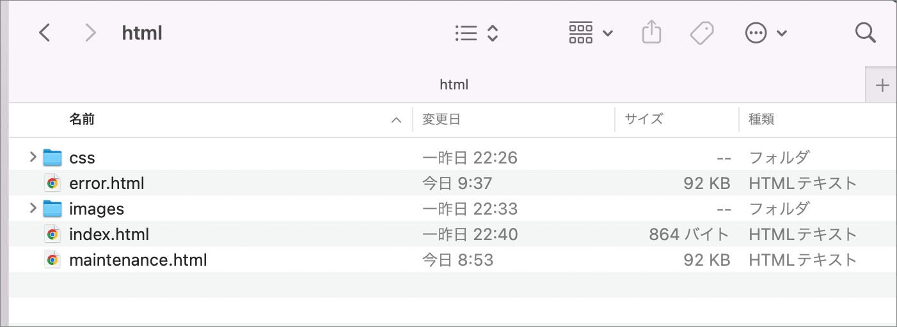
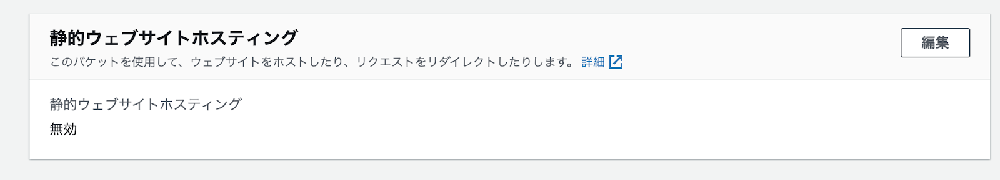

本ハンズオンでは以下のような方をターゲットにしています。
- とりあえず AWS を触ってみたい人
- AWS で静的 Web サイトを構築してみたい人
- AWS リソースポリシーがよくわからない人
前提と注意事項
ご準備いただきたいもの
- マネジメントコンソールにアクセスするための Webブラウザ
Chrome / Firefox - HTML ファイルを作成するためのテキストエディタ

- AWS アカウント及び Administrator Access 権限を持つ IAM ユーザー
このハンズオンでは以下のようなシステムを構築します。
- インターネット上から、自分の作成した Web ページにアクセス出来るようになります。
- 特定のページへのアクセスを制限し、閲覧出来るユーザーを限定します。
S3 って何ができるの
AWS が提供するストレージサービスです。
料金が非常に安く、容量を気にせずにデータを格納したり取得したり出来ます。
S3 のメリット
- 事実上無制限の容量を持つストレージ
- 99.9999999% の高い耐久性
- 様々な AWS サービスとシームレスに連携
- 静的 Web サイトホスティング機能 ← 本ハンズオンではここを掘り下げます
S3 の用語の説明
バケット
データを格納する場所のことです。
S3 上のデータはこのバケット単位で管理されます。
オブジェクト
バケットに格納されるデータの本体です。
格納できるファイルの形式に制限はありません。
オブジェクトの中に実質無制限に格納できますが、1つのオブジェクトのサイズは最大 5TB までに制限されています。
バケットポリシー
バケットや格納されたオブジェクトにアクセスする権限の設定です。
特定のオブジェクトへのアクセスを拒否するといったことができます。
S3 の基本操作
- S3 コンソールにアクセスして GUI から操作ができます。
- AWS CLI や、AWS SDK を利用して、CUI から操作ができます。
S3 の料金
S3 の料金には細かい料金体系があります。また今日は、S3 スタンダードというストレージクラスを扱いますが、データのアーカイブに最適な S3 Glacier (グレイシア) を始めとした様々なクラスが存在し、それぞれ料金が異なります。
料金をざっくりと解説すると「容量」と「リクエスト」によって課金がされます。
「容量」への課金は、データを格納している時間だけ、従量課金されます。
「リクエスト」への課金は「容量」に比べると僅かな金額ですが、細かいファイルをたくさん利用したり、移動したり戻したりと頻繁にオブジェクトを操作した場合などに高額になることがあります。
詳しい料金は以下のサイトに記載されています
Amazon S3 の料金
https://aws.amazon.com/jp/s3/pricing/
1. S3 の管理画面にアクセスする
検索ボックスにて s3 と入力して、S3 をクリックするか、こちら をクリックして、Amazon S3 コンソールを開きます。

2.バケットを作成する
[ バケットを作成 ] ボタンをクリックします。
バケット名は任意ですが、handson-website-＜お名前＞ をお勧めします。
3.AWS リージョン
AWS リージョンが [ アジアパシフィック (東京) ap-northeast-1 ] であることを確認してください。
4.ブロックパブリックアクセス設定
画面中断あたりにある [ このバケットのブロックパブリックアクセス設定 ] の [ □ パブリックアクセスをすべて ブロック ] のチェックボックスにチェックが入っていることを確認します。
ページ最下部の [ バケットを作成 ] ボタンをクリックして、バケットを作成してください。
以上で、S3 バケットの作成は完了です。
1.HTML ファイルをダウンロードする
時間を短縮するため、本ハンズオンでは既成の html ファイルを利用します。
以下 URL から Zip ファイルをダウンロードしてください。
https://d3pivyjogqfrq3.cloudfront.net/Material/html.zip
Zip ファイルがダウンロードできたら、任意の場所に解凍してください。
html ファイルや、images、css フォルダが展開されます。

2.ファイルを S3 バケットにアップロードする
以下 S3 バケットが開かれている状態で、先ほど解凍したファイルとフォルダーを全て選択し、ドラッグしてください。
以下のような画面になるので、ドロップします。
以下のような、アップロードの画面に遷移するので

[ アップロード ] ボタンをクリックします。
以上で、オブジェクトのアップロードは完了です。
1.パブリックアクセスのブロックを解除
とりあえず Web サイトを公開してみましょう。
パブリックアクセスのブロックを解除して、バケットポリシーを設定します。
作成した S3 バケットの管理画面にて [ アクセス許可 ] タブを開き、
[ ブロックパブリックアクセス (バケット設定) ] にある [ 編集 ] ボタンをクリックします。
[ パブリックアクセスのブロック (バケット設定) を編集 ] が開くので、□ パブリックアクセスをすべてブロック のチェックボックスのチェックを外します。
[ 変更の保存 ] ボタンをクリックします。
[ パブリックアクセスのブロック (バケット設定) を編集 ] 画面が表示されるので「確認」と入力して、[ 確認 ] ボタンをクリックします。
2.バケットポリシーの設定
次に、バケットポリシーを設定します。
中段にあります [ バケットポリシー ] 欄の、[ 編集 ] ボタンをクリックします。

以下の JSON を貼り付けし、<バケット名> の部分を作成したバケット名に変更してください。
{
"Version": "2012-10-17",
"Statement": [
{
"Sid": "PublicRead",
"Effect": "Allow",
"Principal": "*",
"Action": [
"s3:GetObject",
"s3:GetObjectVersion"
],
"Resource": [
"arn:aws:s3:::<バケット名>/*"
]
}
]
}
以下のようなイメージです。
バケットポリシーを設定すると、[ パブリックにアクセス可能 ] と表示されるようになります。
3.静的ウェブサイトホスティングを有効化
[ プロパティ ] タブを開き、
ページ下部にある [ 静的ウェブサイトホスティング ] にある [ 編集 ] ボタンをクリックします。

[ 静的ウェブサイトホスティングを編集 ] の画面に遷移するので、[ 静的ウェブサイトホスティング ] を ○ 有効にする を選択します。
インデックスドキュメント
Webサイトにアクセスしたときに、最初に表示されるページを設定します。
[ インデックスドキュメント ] に「index.html」と入力します。

エラードキュメント
エラードキュメントも設定しておきましょう。
エラードキュメントはアクセスエラーになった際に表示されるページが設定できます。
[ エラードキュメント ] に「error.html」と入力します。
画面下部の [ 設定の保存 ] ボタンをクリックします。
4.確認
[ 静的ウェブホスティング ] に URL が表示されるので、クリックしてください。
ブラウザからアクセスしてみる
以下、ページが表示されたら成功です。
存在しないオブジェクトにアクセスしてみる
存在しないページにリクエストしてみてください。アドレスバーになんでも良いのですが、「s3 静的ウェブホスティング URL/〜」と入力してアクセスしてみてください。
以下、ページが表示されたら成功です。
バケットポリシーとは、この S3 バケット (or オブジェクト) に誰がアクセスできるのか？特定の条件をつけて、アクセスを制御できる設計書のようなものです。
「誰が？」と記載しましたが、AWS サービスを制御することも可能です。
例えば、CloudFront という AWS の CDN のサービスがありますが、CloudFront からのアクセスは許可するが、S3 への直接アクセスは禁止する。といった使い方ができます。
ポリシーは以下のような要素を組み合わせて作成します。
アクション
S3 でいうと「ファイルをダウンロードする」だとか「ファイル名を変更する」などといった処理のことです。
制御したいアクションを定義します。
エフェクト
アクションを許可(Allow)するのか、拒否(Deny)するのかを定義します。
リソース
対象の AWS のサービスや S3 バケット、オブジェクトのことです。
アクセス制御の対象を指定します。
これらの要素を組み合わせて、リソースへのアクセス制御をおこないます。
ケース : ページへのアクセスを禁止したい
S3 バケットのバケットポリシーでアクセスを禁止すると、403 Forbidden エラーになります。
S3 の静的ウェブホスティング機能にはエラーが発生した際にエラーページに遷移させることができます。
この機能を利用すると、メンテナンス中のページへのアクセスを禁止し、全てのアクセスをメンテナンスページに遷移させることができます。
オブジェクト単位のアクセス制御
バケットポリシーは、オブジェクト単位でのアクセス制御にも対応しています。
前述の手順では、以下のように「*」を利用して、バケットの配下全部に適用していました。
"Resource": [ "arn:aws:s3:::<バケット名>/*" ]これを、maintenance.html ファイルと指定すると、maintenance.html のみにアクセスできるバケットポリシーを記述できます。
"Resource": [ "arn:aws:s3:::<バケット名>/maintenance.html" ]ここでは、Webサイトのメンテナンスをおこなうシーンを想定します。改修中のページにはアクセスしてほしくないので、そこを制限します。
1.現状確認
まずは、現在のリクエストを確認してみましょう。
Google Chrome の右上にあるオプションボタンから、その他のツールをクリックし、デベロッパー ツールを選択します。

[ Network ] タブに移動して、[ Ctrl ] キー と [ R ] キーを同時に押下してください。
すると、Status が 200 や 304 が表示されるかと思います。
このステータスは、S3 の静的ウェブホスティングサービスが Google Chrome からのリクエストに対して応答 (レスポンス) した結果です。このコードは一般的にステータスコードと呼ばれます。
ステータスコードに関してはここでは深く掘り下げませんが、ざっくりと、200、300 番台が正常系応答で、400、500 番台が異常系応答とご理解ください。
2.バケットポリシーを修正する
ステータスコードをざっくりと理解したところで、バケットポリシーを変更してみましょう。
[ アクセス許可 ] を選択し、バケットポリシーの [ 削除 ] ボタンをクリックします。
[ バケットポリシーを削除してもよろしいですか？ ] と確認画面が表示されるので、「削除」と入力して、[ 削除 ] ボタンをクリックして下さい。
これで、S3 バケットへのアクセスが許可されていない状態になりました。
再度ページにアクセスすると、403 Forbidden - AccessDenied が表示されます。
次に、メンテナンスページへリダイレクトされるように設定します。
[ プロパティ ] タブを選択し、ページ下部にある [ 静的ウェブサイトホスティング ] の右側にある [ 編集 ] ボタンをクリックしてください。
[ 静的ウェブサイトホスティングを編集 ] 画面に遷移するので、エラードキュメント - オプション に「maintenance.html」と入力してください。
ページ下部にある [ 変更の保存 ] ボタンをクリックしてください。
バケットポリシーに以下のコードを貼り付けてください。<バケット名> をバケット名に変更してください。
{
"Version": "2012-10-17",
"Statement": [
{
"Sid": "PublicRead",
"Effect": "Allow",
"Principal": "*",
"Action": [
"s3:GetObject",
"s3:GetObjectVersion"
],
"Resource": [
"arn:aws:s3:::<バケット名>/maintenance.html"
]
}
]
}
このポリシーでは、maintenance.html へのアクセスのみが許可されています。
再度ページにアクセスして、以下が表示されたら成功です。
403 Forbidden エラーが発生して、maintenance.html に画面が遷移しています。
ケース : 特定のユーザーのみアクセスを許可する
さらにきめ細かい制御をおこなうには、バケットポリシーのコンディション要素を使用します。
例えば、特定の VPC や特定の送信元 IP アドレスからのリクエストのみ許可するといった、きめ細かなアクセス制限ができます。
以下のバケットポリシーですと、1.1.1.1 からのアクセスのみ許可する設定となります。
"Condition": {
"IpAddress": {
"aws:SourceIp": [
"1.1.1.1/32"
]
},また、以下の場合は、1.1.1.1 からのアクセスを拒否する設定となります。
"Condition": {
"NotIpAddress": {
"aws:SourceIp": [
"1.1.1.1/32"
]
},これをもちいて、オフィス利用するの送信元 IP アドレスからのアクセスのみを許可することで、「社内ネットワークからのみアクセスを許可する」といったことが可能です。
送信元 IP アドレス
インターネットの世界はグローバル IP アドレスで接続をします。
自宅だとルーターで、会社だとルーターや L3 スイッチ、WAN 網を介して、グローバル IP アドレスにて接続をします。
Web ホスティングするサーバーにリクエストする際、クライアントは接続元のグローバル IP アドレス情報を HTTP ヘッダーに付与して送信してきます。この機能を利用して、送信元 IP 制限が利用できます。
1.現状確認
バケットポリシーを以下のように戻してください。
<バケット名> をバケット名に変更してください。
{
"Version": "2012-10-17",
"Statement": [
{
"Sid": "PublicRead",
"Effect": "Allow",
"Principal": "*",
"Action": [
"s3:GetObject",
"s3:GetObjectVersion"
],
"Resource": [
"arn:aws:s3:::<バケット名>/*"
]
}
]
}以下のようなイメージです。

エラードキュメント
エラードキュメントも maintenance.html から error.html に戻しておいてください。

2.自分のグローバル IP を確認する
ご利用中のネットワークの送信元 IP アドレスを調べるには、確認くんなどのサービスを利用するかアクセスログを確認する方法があります。
確認くん
https://www.ugtop.com/spill.shtml
上記 URL にアクセスして、表示された IP アドレスが現在利用されているネットワークのグローバル IP アドレスになります。
バケットポリシーには以下 JSON をを設定してください。
1.1.1.1/32 の部分はご自身のグローバル IP アドレスを指定ください。
<バケット名> をバケット名に変更してください。
{
"Version": "2012-10-17",
"Statement": [
{
"Sid": "PublicRead",
"Effect": "Allow",
"Principal": "*",
"Action": [
"s3:GetObject",
"s3:GetObjectVersion"
],
"Resource": "arn:aws:s3:::<バケット名>/*",
"Condition": {
"IpAddress": {
"aws:SourceIp": "1.1.1.1/32"
}
}
},
{
"Sid": "ErrorHtml",
"Effect": "Allow",
"Principal": "*",
"Action": [
"s3:GetObject",
"s3:GetObjectVersion"
],
"Resource": "arn:aws:s3:::<バケット名>/error.html"
}
]
}
これで、ご利用中のネットワーク以外からのアクセスはエラーになるようになりました。
制限の状態を確認するには、スマートフォンから Webサイトの URL にアクセスしていただき、Wi-Fi 環境から 4G/5G 回線に切り替えることで接続元 IP アドレスにてアクセスを制限できているのが確認できます。
または、バケットポリシーで指定した送信元 IP アドレスを[127.0.0.1/32]といったアドレスに変更することで、ご利用中のネットワークからのアクセスをブロックすることが出来ます。
いかがでしたでしょうか。
Amazon S3 のバケットポリシーを利用すると細かく権限が付与できますし、本ハンズオンでは取り扱いませんが、CloudFront を使ってコンテンツ配信する際に、この S3 バケットポリシーを利用すると、CloudFront 経由でのアクセスのみ許可して S3 自体のオリジンコンテンツを守るアーキテクチャーを構築することもできます。
（こちらは別の機会にハンズオンを開催させていただきます。）
本ハンズオンは以上となります。